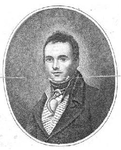

Culloden
A Culloden dirge to the tune of "Johnnie Cope"
By Willison Glass
from "Hogg's "Jacobite Relics", volume II, Appendix, Jacobite songs, N°13, page 414
Tune - Mélodie"Johnnie Cope" (see Johnnie Cope )
Sequenced by Christian Souchon
|
To the song:
"By the redoubtable Willison Glass". Hogg in "Jacobite relics", volume II Willison Glass was an Edinburgh town crier, publican and poet of the early 19th century who wrote two song collections of "original Scottish songs", "Scenes of Gloamin" and "The Caledonian Parnassus" which were both published in 1814. His ale was said to be better than his poetry. |
 Willison Glass, frontispice of 'Scenes of Gloamin' |
A propos de la mélodie:
"Par le redoutable Willison Glass." Hogg dans "Reliques Jacobites", volume II Willison Glass était un Edimbourgeois, à la fois crieur de ville, cabaretier et poète du début du 19ème siècle. Il composa deux recueils de "chants écossais originaux" intitulés "Scènes de désolation" et "Le Parnasse calédonien", parus tous deux en 1814. Sa bière était, dit-on, meilleure que ses vers. |

|
CULLODEN
MODERN (in 1821) 1. The heath-cock crawed o'er muir an' dale; Red raise the sun o'er distant vale, Our Northern clans, wi' dinsome yell, Around their chiefs were gath'ring. " O, Duncan, are ye ready yet ? " McDonald, are ye ready yet ? " O, Fraser, are ye ready yet ? " To join the clans in the morning." 2. On yonder hills our clans appear, The sun back frae their spears shines clear ; The Southron trumps fall on my ear, 'Twill be an awfu' morning. " O, Duncan, &c." 3. " The Prince has come to claim his ain, " A stem o' Stuart's glorious name ; " What Highlander his sword wad hain, " For Charlie's cause this morning. « O, Duncan, &c." 4. " Nae mair we'll chace the fleet, fleet roe, " O'er downie glen or mountain brow, " But rush like tempest on the foe, " Wi' sword an' targe this morning. " O, Duncan, &c." 5. The contest lasted sair an' lang, The pipers blew, the echoes rang, The cannon roared the clans amang Culloden's awfu' morning. " O, Duncan, &c." 6. Duncan now nae mair seems keen, He's lost his dirk an' tartan sheen, His bonnet's stained that ance was clean ; Foul fa' that awfu' morning. " O, Duncan, &c." 7. But Scotland lang shall rue the day, She saw her flag sae fiercely flee; Culloden hills were hills o' wae, It was an awfu' morning. " O, Duncan now, &c. 8. Fair Flora's gane her love to seek, The midnight dew fa's on her cheek ; What Scottish heart that will not weep, For Charlie's fate that morning' ? " O, Duncan now, &c. Source: "The Jacobite Relics of Scotland, being the Songs, Airs and Legends of the Adherents to the House of Stuart" collected by James Hogg, volume II published in Edinburgh by William Blackwood in 1821. |
CULLODEN
MODERNE (en 1821) 1. Le coq de bruyère clame son chant Sur la vallée se lève le soleil rouge-sang. Voici que se rassemblent les clans, Autour de leurs chefs avec l'aurore. "Duncan, debout, es-tu paré pour le combat? McDonald, debout, le devoir n'attend pas! Hommes de Fraser, debout, il est grand temps, pressez le pas, Rejoignez vos clans, car c'est l'aurore! 2. Sur les collines surgissent nos clans; Sur leurs glaives brille le soleil étincelant. C'est les clairons anglais que j'entends Et le sang coulera dès l'aurore. "Duncan, debout, etc. 3. "Le Prince est venu réclamer son dû, L'héritier des Stuarts et de leur antique vertu. Qui dans les Highlands n'eût défendu Charles, ta cause, à la prime aurore? "Duncan, debout, etc. 4. "Fini le temps où nous chassions le daim, Au fond du vallon, près du vertigineux ravin. Avec le targe et le glaive en main Fondons sur l'ennemi dès l'aurore!" "Duncan, debout, etc. 5. Le combat fut long. Il fut acharné, Au son des cornemuses que l'écho renvoyait. Sur les clans le canons vomissaient Un déluge de feu dès l'aurore. "Duncan, debout, etc. 6. Duncan a perdu son air menaçant En perdant sa dague et son fameux plaid de tartan Son bonnet sali, si propre avant: Triste jour qu'inaugurait l'aurore! "Duncan, debout, etc. 7. Longtemps l'Ecosse pleurera le jour Où son étendard a pris la fuite sans retour. Culloden, lieu de martyre pour Le Gaël qui vit s'y lever l'aurore. "Duncan, debout, etc. 8. La belle Flora cherche son ami Et sa joue s'humecte de la rosée de la nuit. Quel cœur écossais ne fût meurtri Par le sort de Charlie dès l'aurore? "Duncan, debout, etc. (Trad. Christian Souchon (c) 2010) |